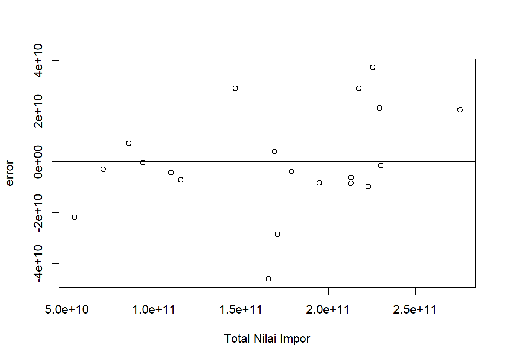
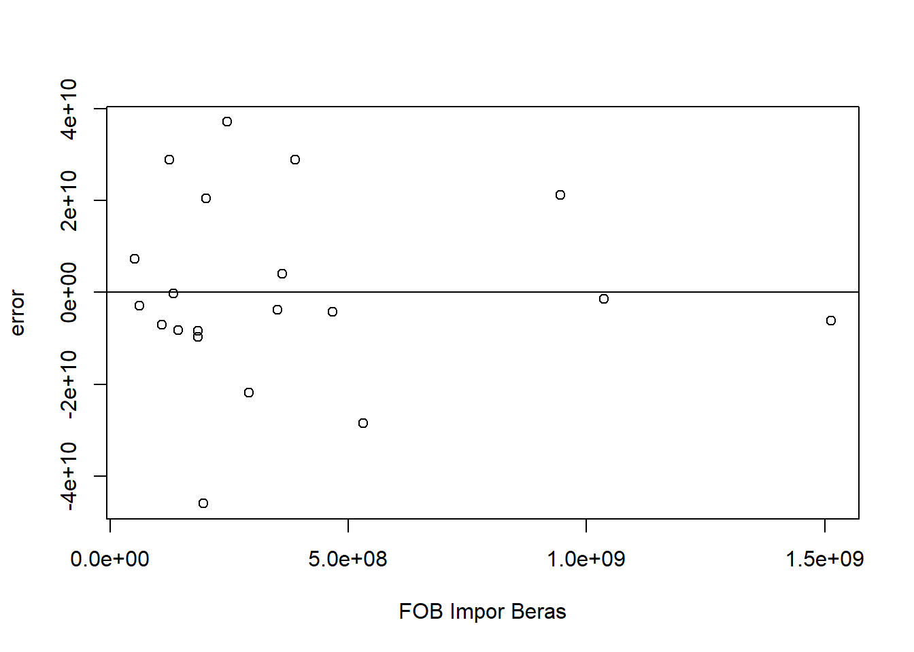
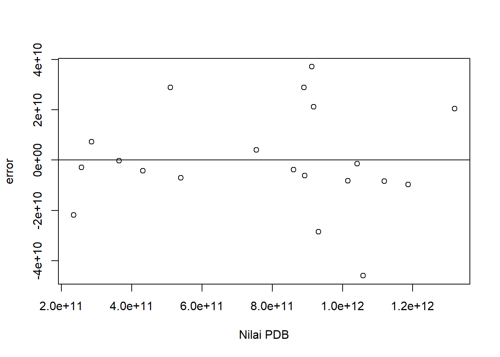

setwd("D:/METOPEL UAS/SALSA METOPEL")
library(readxl)
library(tidyverse)
library(kableExtra)Analisis Pengaruh Impor Beras terhadap Impor keseluruhan Indonesia.
Metode Penelitian Politeknik APP Jakarta

1 Pendahuluan
1.1 Latar belakang
Sebagai negara agraris, Indonesia dikenal kaya akan hasil pertanian dan perkebunan, termasuk padi, salah satu kebutuhan pokok masyarakat. Beragam varietas padi di Indonesia merupakan hasil penelitian para ahli pertanian yang menciptakan varietas unggul dengan ukuran butir besar, ketahanan terhadap cuaca dan hama, serta minim perawatan dan penggunaan pupuk.
Untuk mencapai ketahanan pangan dan menghindari kekisruhan akibat kelangkaan atau perubahan harga beras, pemerintah melalui Bulog aktif memastikan ketersediaan beras di masyarakat, baik melalui dukungan kepada petani lokal maupun impor.
Namun, sejak tahun 2000an, impor beras Indonesia terus meningkat, dipicu oleh pertambahan jumlah penduduk dan penyempitan lahan pertanian akibat alih fungsi lahan menjadi perumahan. Oleh karena itu, penelitian ini bertujuan menganalisis progresivitas impor beras Indonesia dan pengaruhnya terhadap impor keseluruhan dan PDB Indonesia, yang mencerminkan pengaruh pertambahan penduduk.
1.2 Ruang lingkup
Ruang lingkup penelitian ini melibatkan analisis terhadap beberapa aspek penting dalam konteks pertanian dan ekonomi Indonesia, yaitu:
Pengaruh Impor Beras : Menganalisis pengaruh impor beras terhadap total nilai impor keseluruhan dan Produk Domestik Bruto (PDB) Indonesia, yang mewakili pengaruh dari pertambahan penduduk sebagai salah satu indikator yang mempengaruhi besaran nilai PDB.
Metode yang akan digunakan dalam penelitian ini adalah regresi linear multivariat, yang memungkinkan analisis pengaruh beberapa variabel prediktor terhadap variabel respon. Variabel prediktor dalam konteks ini adalah Nilai PDB Indonesia dan Nilai Impor Beras Indonesia, sedangkan variabel responnya adalah total nilai impor keseluruhan Indonesia.
1.3 Rumusan masalah
Berdasarkan ruang lingkup penelitian yang telah dibuat, berikut adalah rumusan masalah yang dapat diidentifikasi:
Bagaimana tren impor beras Indonesia sejak tahun 2000an dan faktor-faktor yang mempengaruhinya.
Bagaimana pengaruh impor beras terhadap total nilai impor keseluruhan dan Produk Domestik Bruto (PDB) Indonesia?
Bagaimana hubungan antara Impor Beras mempengaruhi Total Nilai Impor keseluruhan
Rumusan masalah ini akan menjadi dasar dalam melakukan analisis dan interpretasi data dalam penelitian. Selanjutnya, hasil dari penelitian ini diharapkan dapat memberikan rekomendasi yang tepat dan efektif untuk meningkatkan kinerja ekspor Indonesia.
1.4 Tujuan dan manfaat penelitian
Tujuan Penelitian:
Sebagai mahasiswa, tujuan saya dalam penelitian ini adalah:
- Menganalisis pengaruh impor beras sebagai variabel prediktor terhadap total nilai impor keseluruhan Indonesia.
- Menilai bagaimana impor beras berpengaruh terhadap besaran nilai Produk Domestik Bruto (PDB) Indonesia.
- Membangun model regresi linear multivariat yang paling tepat untuk menggambarkan hubungan antara impor beras, total nilai impor, dan PDB Indonesia.
Manfaat Penelitian:
Pemahaman Konsep: Penelitian ini membantu saya memahami dan menerapkan konsep-konsep dalam analisis regresi linear multivariat, serta memahami dinamika ekonomi dan perdagangan di Indonesia.
Keterampilan Analisis: Melalui penelitian ini, saya mendapatkan pengalaman praktis dalam melakukan analisis data ekonomi dan perdagangan, yang akan berguna dalam karir saya di masa depan.
Kontribusi Ilmiah: Hasil penelitian ini dapat menjadi kontribusi ilmiah bagi saya dan dapat digunakan sebagai referensi untuk penelitian selanjutnya.
Pengembangan Karir: Penelitian ini juga dapat membantu saya dalam mengembangkan portofolio akademik saya, yang dapat berguna dalam proses aplikasi kerja atau studi lanjutan.
Pemenuhan Tugas Akademik: Penelitian ini juga membantu saya dalam memenuhi tugas akademik dan persyaratan kelulusan mata kuliah metodelogi penelitian.
1.5 Package
2 Studi pustaka
Impor merupakan pembelian dan pemasukan barang dari luar ke dalam negeri. “Impor merupakan kegiatan ekonomi membeli produk luar negeri untuk keperluan atau dipasarkan di dalam negeri” (Murni, 2009:208).
Kecenderungan kegiatan impor yang besar tidak sepenuhnya buruk bagi sebuah Negara karena impor juga akan merangsang kegiatan investasi, apabila barang yang di impor merupakan barang modal, barang mentah, dan barang setengah jadi untuk keperluan perindustrian. Kegiatan Impor dan juga ekspor harus berjalan dengan seimbang dimana “Pengembangan industri subtitusi impor dalam negeri harus sejalan dengan penggalakan ekspor” (Arsyad, 2005:163).
Pangan merupakan kebutuhan dasar yang paling esensial bagi manusia untuk mempertahankan hidup. Sebagai makluk hidup, tanpa pangan manusia tidak mungkin dapat melangsungkan hidup dan kehidupanya untuk berkembang biak dan masyarakat. Menurut Amang (1993) terpenuhinya kebutuhan pangan secara kuantitas maupun kualitas merupakan hal yang sangat penting sebagai landasan bagi pembangunan manusia Indonesia seutuhnya dalam jangka panjang. Oleh karena itu pemenuhan kebutuhan pangan yang cukup merupakan salah satu penentu bagi perwujudan ketahanan pangan nasional.
Dilihat dari konsumsi, tingkat konsumsi beras per kapita di Indonesia sangat tinggi karena setiap orang di Indonesia megkonsumsi beras setiap tahunnya sebesar 139,5 kg. Tingkat konsumsi beras Indonesia ini lebih besar dua kali lipat dari konsumsi beras dunia yaitu pada angka 60 kg per tahun (Christianto, 2013)
3 Metode penelitian
3.1 Data
| tahun | imp | pdb | beras |
|---|---|---|---|
| 2003 | $ 54.323.622.341,49 | $ 234.772.463.823,81 | $ 291.423.000,00 |
| 2004 | $ 70.744.690.513,64 | $ 256.836.875.295,45 | $ 61.753.000,00 |
| 2005 | $ 85.533.801.154,40 | $ 285.868.619.196,09 | $ 51.499.000,00 |
| 2006 | $ 93.411.754.075,78 | $ 364.570.515.618,36 | $ 132.621.000,00 |
| 2007 | $ 109.755.093.425,23 | $ 432.216.737.774,86 | $ 467.719.000,00 |
| 2008 | $ 146.706.628.549,19 | $ 510.228.634.990,60 | $ 124.143.000,00 |
| 2009 | $ 115.216.544.854,10 | $ 539.580.085.616,49 | $ 108.153.000,00 |
| 2010 | $ 169.158.027.606,65 | $ 755.094.157.621,94 | $ 360.785.000,00 |
| 2011 | $ 212.996.885.270,32 | $ 892.969.104.563,17 | $ 1.513.164.000,00 |
| 2012 | $ 229.362.102.379,52 | $ 917.869.913.332,65 | $ 945.623.000,00 |
| 2013 | $ 225.519.356.300,02 | $ 912.524.136.718,02 | $ 246.002.000,00 |
| 2014 | $ 217.485.215.772,76 | $ 890.814.755.533,54 | $ 388.178.000,00 |
| 2015 | $ 178.863.652.302,64 | $ 860.854.232.686,21 | $ 351.602.000,00 |
| 2016 | $ 170.835.000.832,59 | $ 931.877.364.037,70 | $ 531.842.000,00 |
| 2017 | $ 194.777.319.199,09 | $ 1.015.618.744.159,73 | $ 143.642.000,00 |
| 2018 | $ 230.045.612.383,42 | $ 1.042.271.532.988,63 | $ 1.037.128.000,00 |
| 2019 | $ 213.034.646.338,22 | $ 1.119.099.871.350,20 | $ 184.254.000,00 |
| 2020 | $ 165.646.843.304,63 | $ 1.059.054.842.698,48 | $ 195.409.000,00 |
| 2021 | $ 222.939.963.035,81 | $ 1.186.505.455.736,54 | $ 183.802.000,00 |
| 2022 | $ 275.703.237.974,26 | $ 1.319.100.220.407,72 | $ 202.042.000,00 |
Penelitian ini menggunakan data time series yang kemudian diproses menggunakan metode regresi multivariat untuk melihat hubungan antar variabel X terhadap Y dan di tambah dengan S di salah satu variabel.
3.2 Metode analisis
Metode yang dipilih adalah regresi Multivariat dengan lebih dari satu, yakni 1 variabel respon dan 2 variabel prediktor, dimana variabel respon disini berperan sebagai variabel dependent dan 2 variabel prediktor berperan sebagai variabel independent.
Spesifikasi yang dilakukan adalah:
\[ Y=\beta_0 + \beta_1 X+\beta_2 S+\mu_. \] di mana \(Y\)= Total Nilai Impor, \(X\) = FOB Impor Beras dan \(S\)= PDB.
4 Pembahasan
4.1 Pembahasan masalah
Pada bagian ini dapat ditampilkan data dan visualisasi data yang telah dikumpulkan.
#impor dataset
read_excel("beras_.xlsx")# A tibble: 20 × 4
tahun imp pdb beras
<dbl> <dbl> <dbl> <dbl>
1 2003 54323622341. 2.35e11 291423000
2 2004 70744690514. 2.57e11 61753000
3 2005 85533801154. 2.86e11 51499000
4 2006 93411754076. 3.65e11 132621000
5 2007 109755093425. 4.32e11 467719000
6 2008 146706628549. 5.10e11 124143000
7 2009 115216544854. 5.40e11 108153000
8 2010 169158027607. 7.55e11 360785000
9 2011 212996885270. 8.93e11 1513164000
10 2012 229362102380. 9.18e11 945623000
11 2013 225519356300. 9.13e11 246002000
12 2014 217485215773. 8.91e11 388178000
13 2015 178863652303. 8.61e11 351602000
14 2016 170835000833. 9.32e11 531842000
15 2017 194777319199. 1.02e12 143642000
16 2018 230045612383. 1.04e12 1037128000
17 2019 213034646338. 1.12e12 184254000
18 2020 165646843305. 1.06e12 195409000
19 2021 222939963036. 1.19e12 183802000
20 2022 275703237974. 1.32e12 202042000dat <- read_excel("beras_.xlsx")
kbl(dat) %>%
kable_styling(bootstrap_options = c("striped", "hover", "condensed", "responsive"))| tahun | imp | pdb | beras |
|---|---|---|---|
| 2003 | 54323622341 | 2.347725e+11 | 291423000 |
| 2004 | 70744690514 | 2.568369e+11 | 61753000 |
| 2005 | 85533801154 | 2.858686e+11 | 51499000 |
| 2006 | 93411754076 | 3.645705e+11 | 132621000 |
| 2007 | 109755093425 | 4.322167e+11 | 467719000 |
| 2008 | 146706628549 | 5.102286e+11 | 124143000 |
| 2009 | 115216544854 | 5.395801e+11 | 108153000 |
| 2010 | 169158027607 | 7.550942e+11 | 360785000 |
| 2011 | 212996885270 | 8.929691e+11 | 1513164000 |
| 2012 | 229362102380 | 9.178699e+11 | 945623000 |
| 2013 | 225519356300 | 9.125241e+11 | 246002000 |
| 2014 | 217485215773 | 8.908148e+11 | 388178000 |
| 2015 | 178863652303 | 8.608542e+11 | 351602000 |
| 2016 | 170835000833 | 9.318774e+11 | 531842000 |
| 2017 | 194777319199 | 1.015619e+12 | 143642000 |
| 2018 | 230045612383 | 1.042272e+12 | 1037128000 |
| 2019 | 213034646338 | 1.119100e+12 | 184254000 |
| 2020 | 165646843305 | 1.059055e+12 | 195409000 |
| 2021 | 222939963036 | 1.186505e+12 | 183802000 |
| 2022 | 275703237974 | 1.319100e+12 | 202042000 |
reg1<-lm(imp~beras+pdb,data=dat)dat$m<-resid(reg1)
plot(dat$imp,dat$m,xlab="Total Nilai Impor",ylab="error")
abline(h=0) # membuat garis horizontal di y=0
dat$m<-resid(reg1)
plot(dat$beras,dat$m,xlab="FOB Impor Beras",ylab="error")
abline(h=0)
dat$m<-resid(reg1)
plot(dat$pdb,dat$m,xlab="Nilai PDB",ylab="error")
abline(h=0)
4.2 Analisis masalah
Hasil regresinya adalah
reg1<-lm(data=dat,imp~beras+pdb) #Y~X+S
summary(reg1)
Call:
lm(formula = imp ~ beras + pdb, data = dat)
Residuals:
Min 1Q Median 3Q Max
-4.593e+10 -8.178e+09 -3.317e+09 1.057e+10 3.712e+10
Coefficients:
Estimate Std. Error t value Pr(>|t|)
(Intercept) 2.898e+10 1.254e+10 2.311 0.0336 *
beras 2.689e+01 1.344e+01 2.000 0.0617 .
pdb 1.674e-01 1.523e-02 10.993 3.8e-09 ***
---
Signif. codes: 0 '***' 0.001 '**' 0.01 '*' 0.05 '.' 0.1 ' ' 1
Residual standard error: 2.134e+10 on 17 degrees of freedom
Multiple R-squared: 0.8957, Adjusted R-squared: 0.8834
F-statistic: 73 on 2 and 17 DF, p-value: 4.52e-09Dari hasil regresi yang di tampilkan, dimana R-squared menunjukan hasil 0.8957, yang artinya angka tersebut mengandung makna bahwa X dan S secara simultan berpengaruh terhadap Y sebesar 89,57%. Sedangkan sisanya dipengaruhi oleh variabel lain di luar persamaan ini.
Kemudian, besaran nilai yang tertera pada FOB Impor Beras, dapat diartikan sebagai setiap kenaikan nilai impor beras sebesar 1 USD akan meningkatkan total nilai impor Indonesia sebesar 2,689 USD positif sedikit signifikan.
Terakhir pada variabel PDB, juga menunjukan hasil positif sangat signifikan dimana setiap kenaikan PDB sebesar 1 USD akan mengakibatkan total nilai impor Indonesia juga naik sebesar 1,674 USD.
5 Kesimpulan
Kesimpulan dari analisis ini adalah mengacu pada beras yang merupakan kebutuhan pangan pokok masyarakat di Indonesia, sampai muncul istilah makan di negeri ini adalah saat memakan nasi, selagi belum makan nasi artinya belum makan atau baru memakan camilan saja.
Dan dari hasil regresi yang di dapatkan dari impor beras an PDB, semakin banyak kita mengimpor komoditas beras dari luar negeri akan mengakibatkan naiknya total nilai impor keseluruhan, yang bila tidak dilakukan dengan hati-hati akan merusak keseimbangan neraca perdagangan antara ekspor dan impor.
Kemudian terakhir untuk PDB, saat PDB Indonesia naik maka total nilai impor juga akan ikut naik. Hal ini di karenakan naiknya PDB berarti semakin bertambah jumlah pendapatan negara misal dari pajak penghasilan para pekerja. Dan besaran pajak yang didapatkan mengartikan bahwa pendapatan dan daya beli masyarakat juga ikut meningkat sehingga pemerintah perlu mengantisipasi ketersediaan barang dan jasa di dalam negeri yang salah satu caranya adalah dengan melakukan impor.
6 Referensi
Christianto, Edward. 2013. “Faktor yang Mempengaruhi Volume Impor Beras di Indonesia”.Jurnal JlBEKA, Volume 7 No 2, Agustus 2013 :38-43. Program Pasca Sarjana Universitas Negeri Medan
Amang, Beddu. 1995. Sistim Pangan Nasional. Jakarta: PT Dharma Karsa Utama
Arsyad, L. 2005. Pengantar Perencanaan Pembangunan Ekonomi Daerah. Yogyakarta: BPFE.
Mankiw, N. G. 2007. Makroekonomi. Edisi keenam. Jakarta: Erlangga.
Murni, A. 2009. Ekonomika Makro. Bandung: PT. Refika Aditama